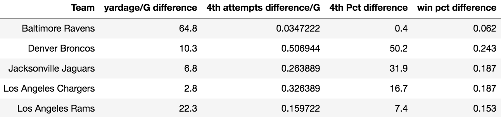

Staley and the Chargers' 4th Down Approach
By Grace Lytle | November 17, 2021

“Third down isn’t third down. Third down is second down,” Brandon Staley states, addressing the Los Angeles Chargers’ team about their aggressive offensive approach for the 2020-2021 season.
The Chargers seem to have all of the weapons they need to make a deep playoff run; they have bright, young talent in Rookie of the Year quarterback Justin Herbert and defensive studs like Jerry Tillery and Kenneth Murray, and a well rounded, experienced core including wide receiver duo Keenan Allen and Mike Williams and defense looking healthier with Joey Bosa and Derwin James. After a mediocre 7-9 finish for the Chargers in the 2019-2020 season, the Chargers turned to the search for a new head coach. Owner Dean Spanos commented on wanting a more innovative approach to the game after releasing previous head coach, Anthony Lynn. So, Brandon Staley was selected as the new leader of the Los Angeles Chargers.
Brandon Staley enters the 2020-2021 season with only four previous years of coaching experience in the NFL, and he steps into his first ever as a head coach. He served as the outside linebackers coach for the Chicago Bears from 2017-2018, coached for the Denver Broncos as an outside linebackers coach in 2019, and became the defensive coordinator for the Los Angeles Rams in 2020 before being hired by the Chargers. Staley led the Rams defense to finish the 2020-2021 season with the fewest yards allowed per game and second fewest points allowed per game.
If Dean Spanos wanted to be aggressive and innovative, Brandon Staley was the right pick for the philosophy, especially when it comes to fourth down. Through the first eight games of Staley’s NFL head coaching career, the Chargers have already had 17 fourth down attempts, almost 70% of their total attempts in the previous season (25).

**The Los Angeles Chargers are tied for the 4th most 4th down attempts this season (through Week 9).
Although they have only converted 11 of the 17 attempts (still an impressive 64.7%), these have come at crucial points of the game.
In Week 3, the Chargers found themselves with their hands tied; it was 4th and 9 with less than a minute left in a tie game versus the Kansas City Chiefs. Instead of a long field goal attempt, Staley chose to go for it. This decision resulted in a conversion and eventually a touchdown to take the lead and a win.
Similarly in Week 9, Staley elected to go for a 4th and 1 from the Philadelphia Eagles’ 39 yard line in the final three minutes of a tie game as well.
In Week 5, the Chargers faced yet another difficult fourth down decision versus the Cleveland Browns in the 4th quarter; it was 4th and 4 from the Chargers’ own 41 yard line, and Staley elected to once again go for it.
The Next Gen Stats Decision Guide is created by the NFL’s Next Gen Stats analytics team and evaluates a team’s chances of converting a fourth down, taking into account odds of gaining the correct yardage, possibility of penalties, and even increasing chances when you’re throwing to a dominant 50-50 ball receiver like Mike Williams for the Chargers. Taking a look at the this guide (Week 5's biggest decisions: Chargers, Browns ace fourth-down calls; Bengals stumble), the Chargers’ win probability in the Week 5 fourth quarter fourth down versus the Browns would either increase from 18% to 25% with a successful conversion, or drop from 18% to 11% without one, and a punt would drop it to 15%. Wide receiver Mike Williams drew a defensive pass interference which resulted in a 33 yard gain, and the Chargers’ chances of winning jumped to 33%. Looking at the Next Gen Stats Decision Guide, they said that the Chargers were right to go for it, with an “advantage of 3.1 percentage points in expected win probability value”.
EdjSports NFL Coach Rankings (EdjSports NFL Coach Rankings - Through Week 9) uses two systems to judge coaches; the CCI rank is the Offensive Play Calling ranking and analyzes offensive play calling on 4th downs, and the EPI rank is the Edj Power Indexes Ranking, which includes offensive pass and rush and defensive pass and rash, and ranking serves as a reflection of team performance in each type of situation on the season. EdjSports rank is a weighted average of these two rankings. Staley is ranked first in CCI, 9th in EPI, and first in EdjSports rank overall. They say that Staley’s best 4th down call was Week 9 against the Eagles, where their win probability was +19.5% and that his worst 4th down call was Week 3 against the Chiefs, where their win probability was -5.7% if they went for it. It is important to consider that the Chargers’ kicker at Week 3, Vizcaino, was heavily struggling. The win probability calculated for this did not account for the likelihood that Vizcaino specifically would be able to make this long field goal. Regardless, we know that both of these calls did happen and were both successful conversions.
When comparing yards per game, fourth down attempts per game, fourth down conversion percentage, and win percentage from the 2019-2020 and 2020-2021* seasons, the Los Angeles Chargers are one of only five teams that have positive differences (i.e. improvements in all categories). They are joined by the Baltimore Ravens, the Denver Broncos, the Jacksonville Jaguars, and the Los Angeles Rams.
Teams with Positive Differences in Every Category (2020 subtracted from 2021*)
When seeing which teams have at least three of these differences positive, the list expands to include the Tennessee Titans, Arizona Cardinals, New England Patriots, Tampa Bay Buccaneers, and the Cleveland Browns. Unsurprisingly, these teams have an average win percentage in 2021* well above 0.500 (0.634).
Teams with Positive Differences in at Least 3 Categories (2020 subtracted from 2021*)
***Yardage/G difference graph is excluded because all teams with at least 3 categories in the positive had a positive change in yardage per game from 2020 to 2021*
While not all of the Chargers’ recent progress this year can be attributed to Brandon Staley, it is clear that the team is experiencing a wave of successes since his addition to the staff. In Staley’s own words, “The thing about analytics is they drive better decision-making”. Evan Silva, writer for NBC Sports describes Staley as “a masterclass in blending ‘real football’ and analytics,” and says that he is the “model for the future of NFL coaching”. Brandon Staley may just be the eager, young, excited spark the Chargers have been looking for for years.
*All stats for the 2020-2021 season were observed/calculated through the first 9 weeks and were adjusted accordingly for teams with bye weeks.
.gif)